Smart Gas Terminal / Product Case
JT-JDY-96NF / JY-01 家用双向燃气安全终端
东莞嘉德云网络有限公司项目图文演示报告。
- 项目对象
- 家用可燃气体探测器及燃气安全终端。
- 核心链路
- 检测、判断、告警、联动、记录与上报。
- 平台协同
- 围绕安装上线、设备在线、告警、故障和监管数据推送进行交付梳理。
- 项目价值
- 把硬件终端资料、平台反馈和试产管理串成可交付、可追踪的产品推进闭环。
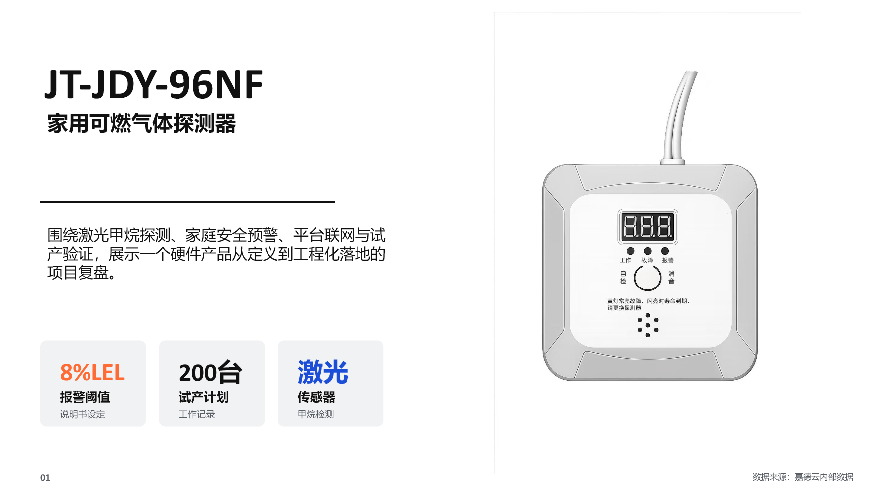
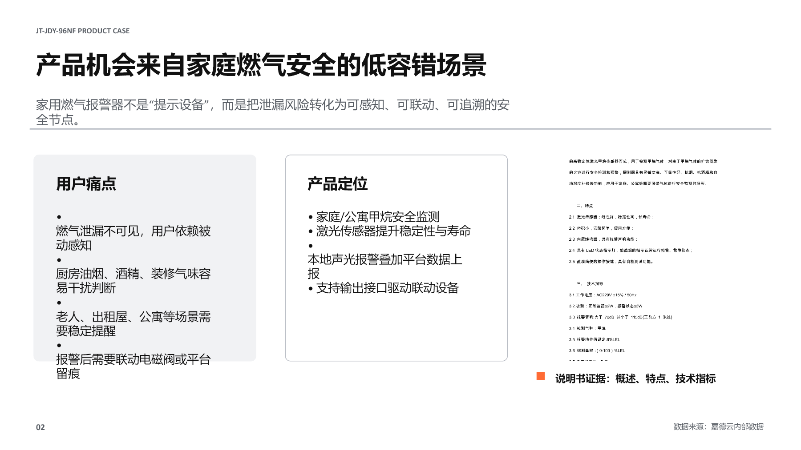
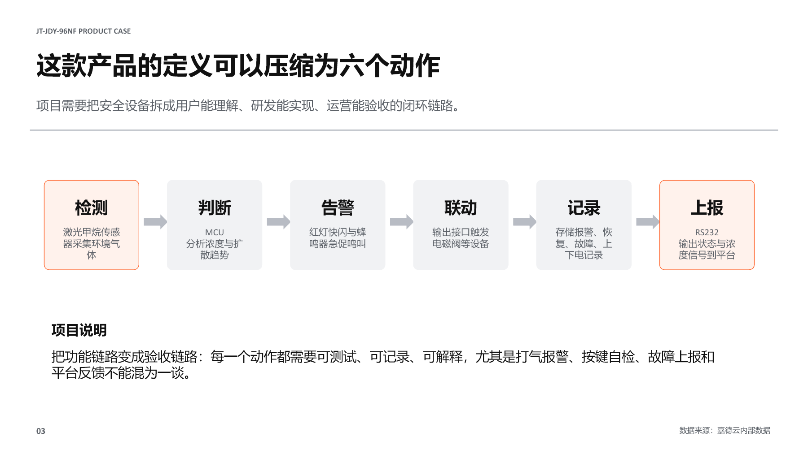
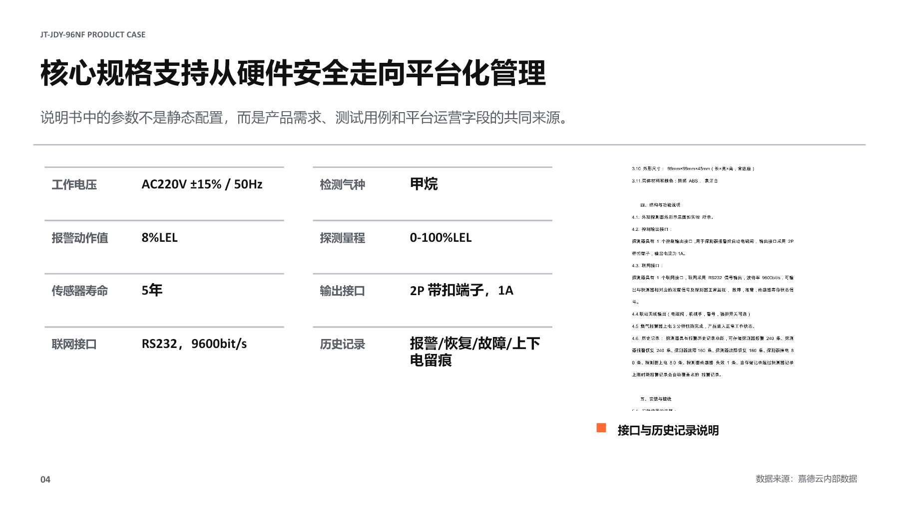
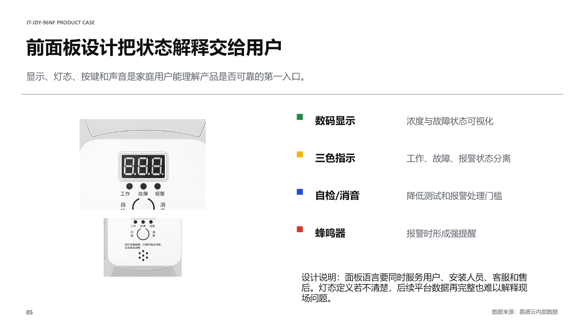
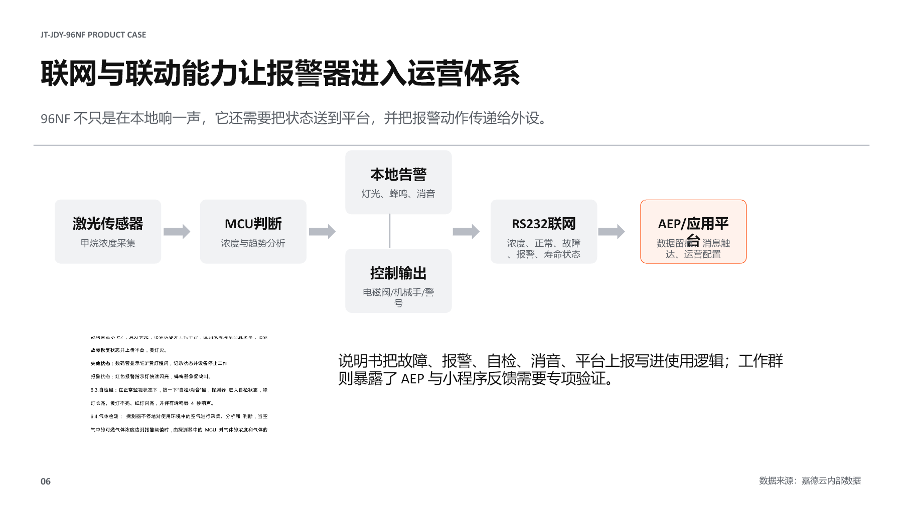
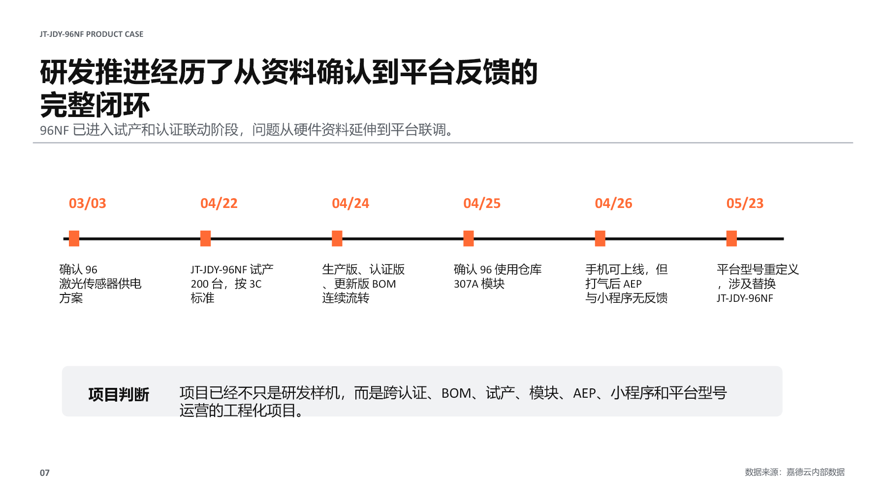
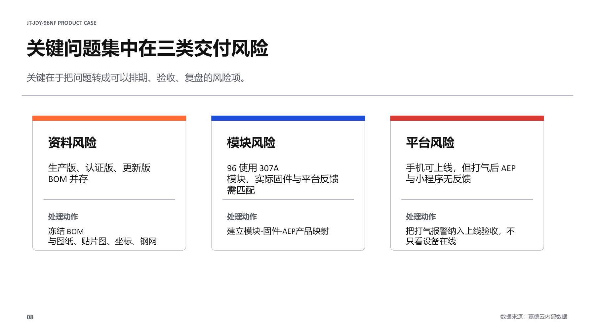
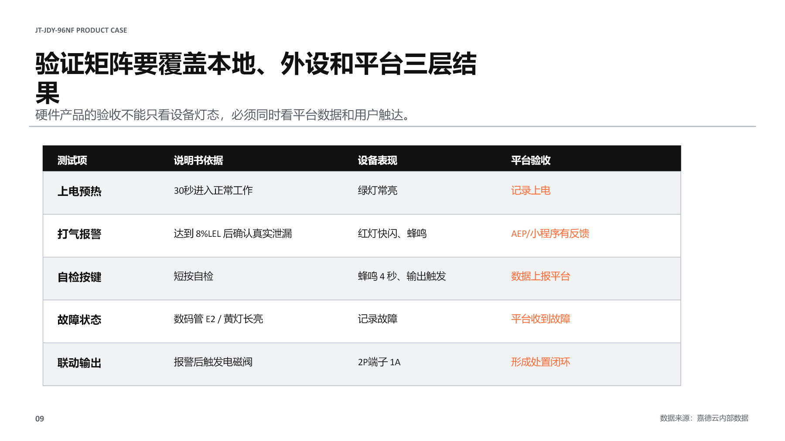
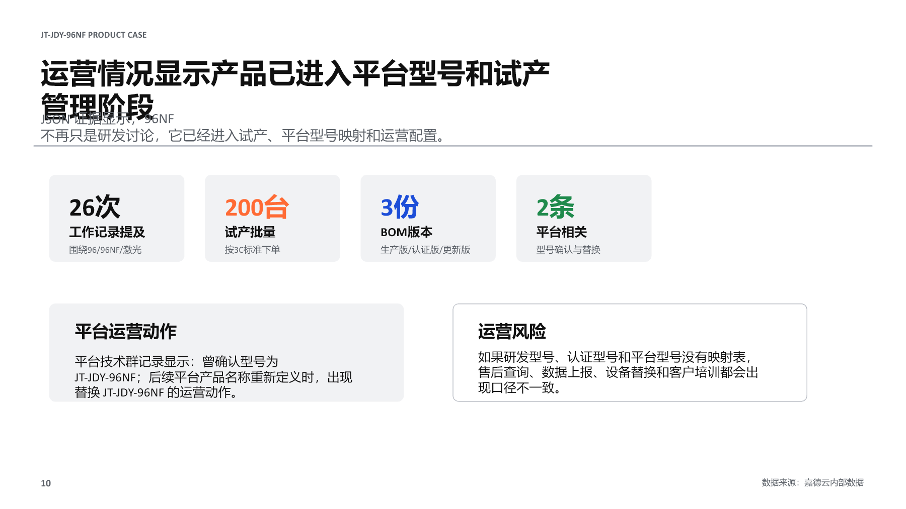
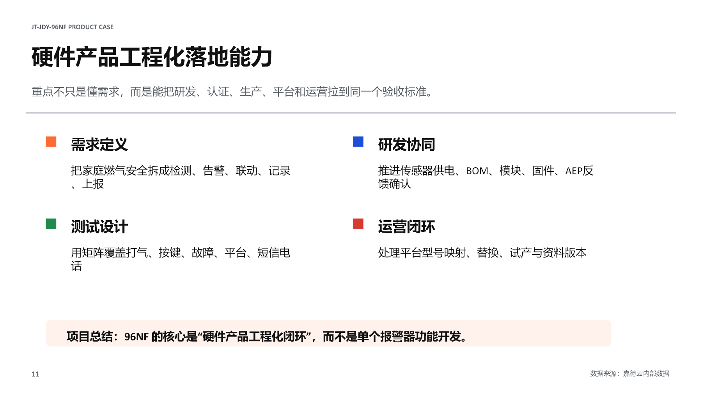
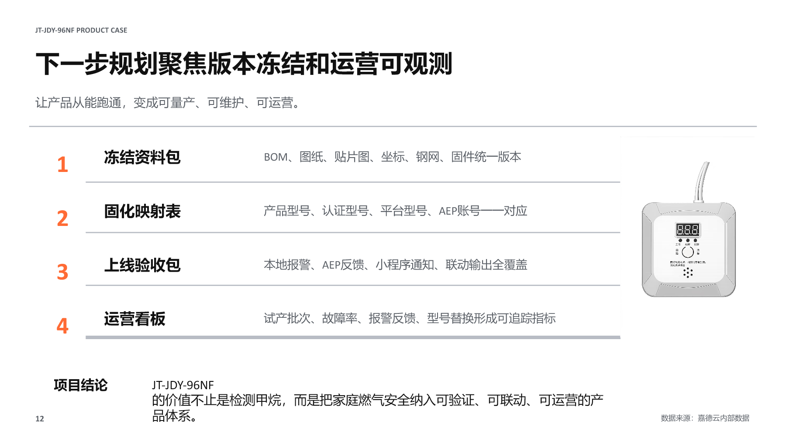